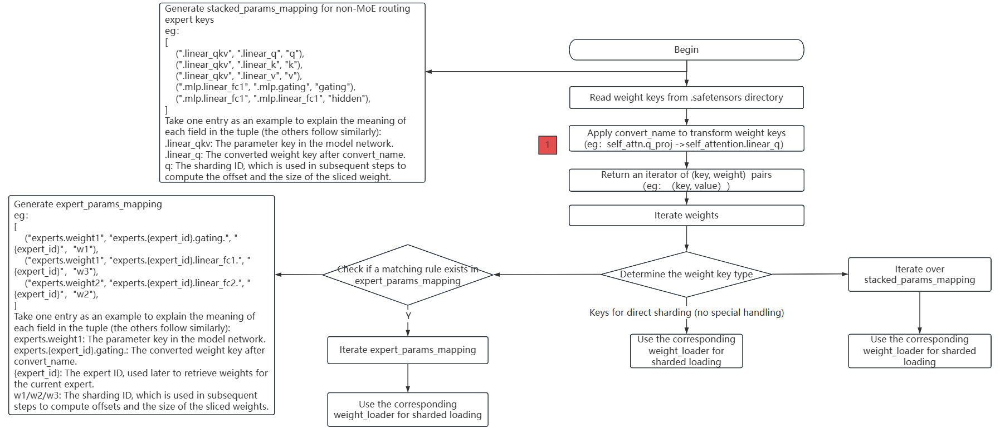

Deprecated
This page belongs to the Static Graph (GRAPH_MODE) Implementation section and has been marked as deprecated. New features are primarily being developed in the “r2.0.0 Dynamic Graph Implementation” section. Please refer to the dynamic graph documentation first.
Weight Conversion Development Adaptation

This document will guide developers on how to adapt the weight conversion functionality of new models to MindSpore Transformers during development, enabling users to convert Hugging Face weights into MindSpore Transformers weights through a unified automatic conversion process, thus initiating the inference workflow.
Mcore Model Network Loading Hugging Face Weights Flowchart

The above flowchart describes the complete weight conversion and loading process of loading .safetensors weight files in Hugging Face format into the Mcore model.
The main steps are as follows:
Read all
.safetensorsfiles and obtain thekeynames of each weight;Call the
convert_namemethod to convert the weight keys. This step is also a necessary adaptation for weight conversion development, and it returns the weightkeyand the corresponding weight value;Traverse the weight
keyand the corresponding weight value, and determine the type of the weightkey:For keys that do not belong to
MoEor special structures, they can be directly loaded usingweight_loader;For keys related to routing experts in
MoE, generate the corresponding processing rulesexpert_params_mapping, traverseexpert_params_mapping, match the names, and finally call the correspondingweight_loaderfor processing;For keys that do not belong to
MoErouting experts but require special handling, generate the corresponding processing rulesstacked_params_mapping, traversestacked_params_mapping, match the names, and finally call the correspondingweight_loaderfor processing.
Development Steps
As shown in the flowchart above, adapting the weight conversion only requires one modification: calling the convert_name method to complete the mapping from Hugging Face weight keys to intermediate state keys.
The steps are as follows:
Create a utils.py common utility file under the model implementation directory to encapsulate general functional methods for the model base class.
Create a class in utils.py:
Name the class using the format [ModelName]PreTrainedModel
Inherit from PreTrainedModel and ModelMixin base classes
Define class attributes config_class and base_model_prefix:
config_class: Specify as the Config class corresponding to the model
base_model_prefix: Set as the string identifier for the model name
Implement the key-value mapping table weight_mapping required by the convert_name() method:
Example of weight_mapping:
weight_mapping = [ ('model.embed_tokens.', 'embedding.word_embeddings.'), ('.self_attn.q_proj.', '.self_attention.linear_q.'), ('.self_attn.k_proj.', '.self_attention.linear_k.'), ('.self_attn.v_proj.', '.self_attention.linear_v.'), ('.self_attn.o_proj.', '.self_attention.linear_proj.'), ('.mlp.gate_proj.', '.mlp.gating.'), ('.mlp.down_proj.', '.mlp.linear_fc2.'), ('.mlp.up_proj.', '.mlp.hidden.'), ('.post_attention_layernorm.', '.pre_mlp_layernorm.'), ('model.norm.', 'decoder.final_layernorm.'), ('lm_head.', 'output_layer.'), ('model.layers.', 'decoder.layers.') ]
In each tuple, the first element is the Hugging Face weight key, and the second element is the intermediate state weight key.
Qwen3 Model Weight Conversion Adaptation Example
Create a new utils.py file under the models/qwen3 directory. Refer to utils.py for more details.
Partial code of Qwen3PreTrainedModel is as follows:
class Qwen3PreTrainedModel(PreTrainedModel, ModelMixin):
config_class = Qwen3Config
base_model_prefix = "Qwen3"
weight_mapping = [
('model.embed_tokens.', 'embedding.word_embeddings.'),
('.self_attn.q_proj.', '.self_attention.linear_q.'),
('.self_attn.k_proj.', '.self_attention.linear_k.'),
('.self_attn.v_proj.', '.self_attention.linear_v.'),
('.self_attn.o_proj.', '.self_attention.linear_proj.'),
('.self_attn.q_norm.', '.self_attention.q_layernorm.'),
('.self_attn.k_norm.', '.self_attention.k_layernorm.'),
('.mlp.gate_proj.', '.mlp.gating.'),
('.mlp.down_proj.', '.mlp.linear_fc2.'),
('.mlp.up_proj.', '.mlp.hidden.'),
('.post_attention_layernorm.', '.pre_mlp_layernorm.'),
('model.norm.', 'decoder.final_layernorm.'),
('lm_head.', 'output_layer.'),
('model.layers.', 'decoder.layers.')
]
Verifying Successful Weight Loading
Refer to the Inference Documentation to run the inference process. Check the logs. If the following content appears in the log, it indicates that the weights and network fully match, and the weights have been completely loaded into the network. Verify whether the model inference results meet expectations. If garbled output occurs, further investigation is needed, refer to the inference accuracy comparison documentation:
These parameters are not loaded in the network: {}